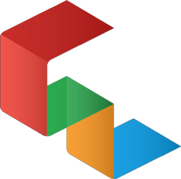
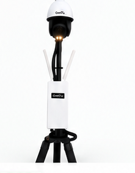
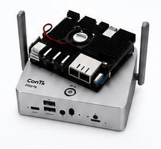
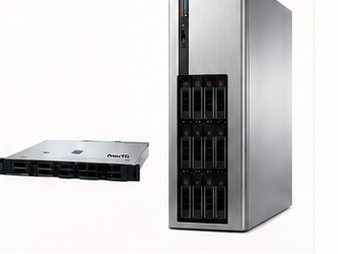
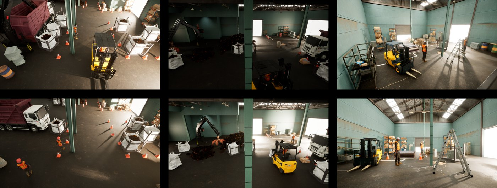

ConTILab실제 작업현장이 반영된 위험성평가와 안전교육, Vision AI 기반 위험 감지, 안전활동 분석을 통해 자발적 안전관리를 실현합니다.
건설·물류·화학·항만·반도체 — 현장별 위험작업에 특화된 Vision AI 검출 모델로 실시간 감지·경고합니다.
모델 보기온디바이스 AI 카메라부터 100채널 서버까지, 현장 규모에 맞춘 NPU AI 연산 인프라 라인업과 업역별 도입 비용.
라인업 · 도입 비용영상을 읽고 상황을 이해하는 VLM으로 자동 안전 보고서·위험구역 추적·정밀 분석을 수행합니다.
분석 보기현장 규모에 딱 맞는 NPU AI 연산 시스템. 카메라 단독부터 100채널 통합 관제까지, 한 라인업으로 확장합니다.



카메라마다 현장 데이터를 모아 AI를 학습시켜야 하므로, 어떤 작업을 감지하느냐에 따라 공수가 크게 달라집니다.
현장 규모와 기존 CCTV 유무에 따라 위 3가지 배치를 조합합니다. 업역별로 권장하는 구성과 적용 기능을 정리했으며, 금액은 위 장비 단가를 기준으로 합니다.
도입 비용은 1회성 구축비이며, AI 학습·원격 관제·VLM 분석은 월 구독으로 운영됩니다.
단순 검출을 넘어 VLM이 현장 맥락을 해석해 자동 보고서·위험구역 추적·정밀 분석을 수행합니다.
하루의 모든 감지 데이터를 VLM이 읽고, 위험 유형·시간대·현장별로 종합해 일일 안전 보고서로 자동 정리합니다. 관리자는 요약된 리포트만 확인하면 됩니다.
인양물·중장비 등 위험 대상을 PTZ 카메라가 자동으로 따라가며 확대 관제합니다. 지정된 위험구역(Risk Area) 진입을 실시간으로 추적해 이벤트를 기록합니다.
영상 평면을 실제 공간좌표 격자로 변환해, 작업자·장비 간 실측 거리와 이동 동선을 계산합니다. 근접·침입 위험을 물리적 거리 기준으로 정밀 판정합니다.

실제와 유사한 가상 현장을 생성해 위험 상황 학습 데이터를 대량 확보합니다. 촬영이 어려운 사고·희귀 상황까지 커버해 AI 검출 정밀도를 끌어올립니다.